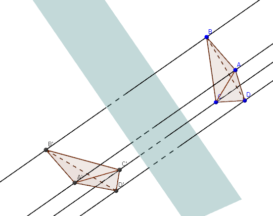
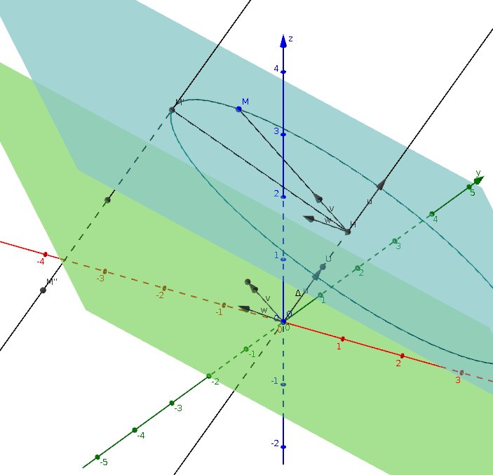

| Choisissez votre langue ! | Choose your language ! |
Antidéplacements de l'espace
Improper (negative) isometries of space
Définitions et exemles
Definitions and examples

Donc en particulier :
So, as a special case :
Dans ces conditions ToS est une réflexion par rapport à un plan translaté de H de \( \displaystyle \overrightarrow{u/2} \) .
Under these conditions ToS is a reflection with respect to a plane translated of H by \( \displaystyle \overrightarrow{u/2} \) .
Classification suivant les invariants
Tout d'abord pour ce qui concerne l'application linéaire associée aux antidéplacements nous pouvons reprendre l'étude de cas faite dans la page précédente concernent les isométries de l'espace :Dans ce cas la matrice de l'application linéaire orthogonale u associée possède une ou trois valeurs propres réelles à l'ordre de multiplicité près, qui sont toutes égales à +1 ou à -1.
Les possibilités sont donc:
- 1,1,1 : 1 de multiplicité 3
- -1,-1,-1 : -1 valeur propre de multiplicité 3
- 1,-1,-1 : 1 valeur propre simple et -1 valeur propre double
- -1,1,1 : -1 valeur propre simple et 1 valeur propre double
- 1 : 1 valeur propre unique et simple
- -1 : -1 valeur propre unique et simple
\( \displaystyle \begin{pmatrix} {- 1} & 0 & 0 \\ 0 & {\cos(\theta)} & {- \sin(\theta)} \\ 0 & {\sin(\theta)} & {\cos(\theta)} \\ \end{pmatrix} \)
le cas n°2 correspondant à la valeur θ=π et le cas n°4 à la valeur θ=0.Classification according to invariants
First of all, with regard to the linear application associated with improper isometries, we can take up the case study made on the previous page concerning the isometries of space:In this case the matrix of the associated orthogonal linear map u has one or three real eigenvalues up to the order of multiplicity, which are all equal to +1 or -1.
The possibilities are therefore:
- 1,1,1: 1 of multiplicity 3
- -1,-1,-1: -1 eigenvalue of multiplicity 3
- 1,-1,-1: 1 simple eigenvalue and -1 double eigenvalue
- -1,1,1: -1 simple eigenvalue and 1 double eigenvalue
- 1: 1 unique and simple eigenvalue
- -1: -1 unique and simple eigenvalue
\( \displaystyle \begin{pmatrix} {- 1} & 0 & 0 \\ 0 & {\cos(\theta)} & {- \sin(\theta)} \\ 0 & {\sin(\theta)} & {\cos(\theta)} \\ \end{pmatrix} \)
case 2 corresponding to the value θ=π and case #4 has the value θ=0.Alors il est clair qu'on a affaire à la réflexion par rapport à ce plan (cas n°4).
Considérons le cas où l'invariant se réduit au seul point O.
Identifions l'affine et le vectoriel par le choix du point O.
L'antidéplacement a donc pour matrice
\( \displaystyle \begin{pmatrix} {- 1} & 0 & 0 \\ 0 & {\cos(\theta)} & {- \sin(\theta)} \\ 0 & {\sin(\theta)} & {\cos(\theta)} \\ \end{pmatrix} \)
où θ n'est pas un multiple de 2π.Sachant que
\( \displaystyle \begin{pmatrix} {- 1} & 0 & 0 \\ 0 & {\cos(\theta)} & {- \sin(\theta)} \\ 0 & {\sin(\theta)} & {\cos(\theta)} \\ \end{pmatrix} = \begin{pmatrix} {- 1} & 0 & 0 \\ 0 & 1 & 0 \\ 0 & 0 & 0 \\ \end{pmatrix} \times \begin{pmatrix} 1 & 0 & 0 \\ 0 & {\cos(\theta)} & {- \sin(\theta)} \\ 0 & {\sin(\theta)} & {\cos(\theta)} \\ \end{pmatrix} \)
et que le produit de droite est commutatif.L'antidéplacement apparait comme le produit commutatif d'une rotation d'axe Δ où Δ est une droite passant par O et de vecteur directeur un de la matrice correspondant à la valeur propre 1, par une réflexion relativement à un plan H passant par O et orthogonal à Δ.
Illustration
M" est l'image de M dans une rotation-réflexion de centre O.So it is clear that we are dealing with reflection relative to to this plane (case n°4).
Consider the case where the invariant reduces to the single point O.
Let us identify the affine space and the vector space by the choice of the point O.
The improper isometry therefore has as a matrix
\( \displaystyle \begin{pmatrix} {- 1} & 0 & 0 \\ 0 & {\cos(\theta)} & {- \sin(\theta)} \\ 0 & {\sin(\theta)} & {\cos(\theta)} \\ \end{pmatrix} \)
where θ is not a multiple of 2π.Knowing that
\( \displaystyle \begin{pmatrix} {- 1} & 0 & 0 \\ 0 & {\cos(\theta)} & {- \sin(\theta)} \\ 0 & {\sin(\theta)} & {\cos(\theta)} \\ \end{pmatrix} = \begin{pmatrix} {- 1} & 0 & 0 \\ 0 & 1 & 0 \\ 0 & 0 & 0 \\ \end{pmatrix} \times \begin{pmatrix} 1 & 0 & 0 \\ 0 & {\cos(\theta)} & {- \sin(\theta)} \\ 0 & {\sin(\theta)} & {\cos(\theta)} \\ \end{pmatrix} \)
and that the product on the right is commutative.The improper isometry appears as the commutative product of a rotation with axis Δ where Δ is a straight line passing through O and with direction vector an of the matrix corresponding to the eigenvalue 1, by a reflection relative to a plane H passing through O and orthogonal to Δ.
Illustration
M" is the image of M in a rotation-reflection with center O.
Il reste à étudier le cas où l'antidéplacement ne possède aucun point fixe.
La matrice du déplacement est de la forme :
\( \displaystyle \begin{pmatrix} {- 1} & 0 & 0 \\ 0 & a & {- b} \\ 0 & b & a \\ \end{pmatrix} \)
avec a2+b2=1.Les points fixes sont donc des solutions d'un système :
\( \displaystyle \left\{ \begin{matrix} {x = - x + \alpha} \\ {y = {ay} - {bz} + \beta} \\ {z = {by} + {az} + \gamma} \\ \end{matrix} \right. \)
soit encore :\( \displaystyle \left\{ \begin{matrix} {2x = \alpha} \\ {\left( {1 - a} \right)y + {bz} = \beta} \\ {- {by} + \left( {1 - a} \right)z = \gamma} \\ \end{matrix} \right. \)
Le déterminant de ce système est 2((1-a)2+b2).Dire que l'antidéplacement ne possède aucun point fixe, c'est dire que ce déterminant est nul donc que a=1 et b=0 et que la matrice est
\( \displaystyle \begin{pmatrix} {- 1} & 0 & 0 \\ 0 & 1 & 0 \\ 0 & 0 & 1 \\ \end{pmatrix} \)
Ce qui correspond au cas n°4 de notre classification.L'antidéplacement est alors à une translation près, une réflexion par rapport à un plan, donc une symétrie glissée telle que nous l'avons définie plus haut.
Nous pouvons donc résumer ainsi :
It remains to study the case where the improper isometry has no fixed point.
The displacement matrix is of the form:
\( \displaystyle \begin{pmatrix} {- 1} & 0 & 0 \\ 0 & a & {- b} \\ 0 & b & a \\ \end{pmatrix} \)
with a2+b2=1.The fixed points are therefore solutions of a system:
\( \displaystyle \left\{ \begin{matrix} {x = - x + \alpha} \\ {y = {ay} - {bz} + \beta} \\ {z = {by} + {az} + \gamma} \\ \end{matrix} \right. \)
or again:\( \displaystyle \left\{ \begin{matrix} {2x = \alpha} \\ {\left( {1 - a} \right)y + {bz} = \beta} \\ {- {by} + \left( {1 - a} \right)z = \gamma} \\ \end{matrix} \right. \)
The determinant of this system is 2((1-a)2+b2).To say that the improper isometry has no fixed point, is to say that this determinant is zero so that a=1 and b=0 and that the matrix is
\( \displaystyle \begin{pmatrix} {- 1} & 0 & 0 \\ 0 & 1 & 0 \\ 0 & 0 & 1 \\ \end{pmatrix} \)
This corresponds to case 4 of our classification.The improper isometry is then up to a translation, a reflection with respect to a plane, therefore a glide reflection as we defined it above.
We can therefore summarize as follows:
| Invariants | Antidéplacements |
| Espace E entier | |
| Plan | Réflexion |
| Droite | |
| Point | Rotation-Réflexion (commutative) |
| ∅ | Symétrie glissée |
| Invariants | Improper isometry |
| Whole space E | |
| Plane | Reflection |
| Line | |
| Point | Rotation-Reflection (commutative) |
| ∅ | Glide reflection |
| Invariants | Antidéplacements | Déplacements |
| Espace E entier | Identité | |
| Plan | Réflexion | |
| Droite | Rotation | |
| Point | Rotation-Réflexion (commutative) | |
| ∅ | Symétrie glissée | Translation ou vissage |
| Invariants | Improper isometry | Proper isometry |
| Whole space E | Identity | |
| Plane | Reflection | |
| Line | Rotation | |
| Point | Rotation-Reflection (commutative) | |
| ∅ | Glide reflection | Translation or screwing |
|
Création Gilles Dubois - licence CC-BY-SA
Created by Gilles Dubois - licence CC-BY-SA
|
Septembre 2023
September 2023
|
Version mobile Jquery
Mobile Jquery version
|
|